리눅스마스터-2급 (2021-03-13 기출문제)
1과목: 리눅스 운영 및 관리
1. 다음 중 CentOS 7에서 사용자의 디스크 사용량을 제한할 때 사용하는 명령으로 알맞은 것은?
- quota
- xquota
- set_quota
- xfs_quota
(정답률: 57%)

2. 다음 중 CentOS 7에서 사용 가능한 파일 시스템 점검 명령으로 틀린 것은?
- fsck
- e2fsck
- xfs.fsck
- xfs_repair
(정답률: 50%)
3. 다음 중 장착된 디스크들의 파티션 테이블 정보를 확인하는 명령으로 가장 알맞은 것은?
- mount -a
- fdisk -l
- df -hT
- du -h
(정답률: 69%)
4. 다음 중 XFS 파일 시스템을 생성하는 명령으로 알맞은 것은?
- mke2fs
- xfs_mkfs
- xfs.mkfs
- mkfs.xfs
(정답률: 60%)
5. 다음 ( 괄호 ) 안에 들어갈 내용으로 알맞은 것은?
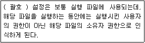
- ACL
- Set-UID
- Set-GID
- Sticky-Bit
(정답률: 75%)
6. 파일의 허가권이 다음과 같다. 사용자는 읽기, 쓰기, 실행 권한을 부여하고, 그룹과 다른 사용자는 읽기 및 실행 권한만 설정하려고 할 때 명령으로 알맞은 것은?
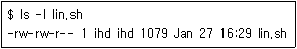
- chmod 664 lin.sh
- chmod 644 lin.sh
- chmod a+x,g-w lin.sh
- chmod u+rwx,go+rx lin.sh
(정답률: 51%)
7. 다음 중 파일이나 디렉터리의 생성 시에 부여되는 기본 허가권의 값을 지정하는 명령으로 알맞은 것은?
- chmod
- chgrp
- umask
- quota
(정답률: 70%)
8. 다음 증 ihd 사용자의 디스크 사용량을 확인하는 명령으로 알맞은 것은?
- df
- du
- free
- edguota
(정답률: 65%)
9. 다음 중 부팅 시에 특정 파티션을 자동으로 마운트 되도록 등록하는 파일로 알맞은 것은?
- /etc/mtab
- /etc/fstab
- /etc/partitions
- /etc/filesystems
(정답률: 70%)
10. 허가권이 다음과 같이 설정되어 있다. 다른 그룹에 속한 kait 사용자의 접근을 막기 위한 명령으로 가장 알맞은 것은?
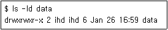
- group 계층의 r 권한을 제거한다.
- group 계층의 x 권한을 제거한다.
- other 계층의 r 권한을 제거한다.
- other 계층의 x 권한을 제거한다.
(정답률: 61%)
11. 다음 설명에 해당하는 셸로 알맞은 것은?
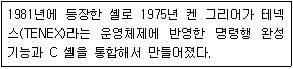
- bash
- ksh
- dash
- tcsh
(정답률: 70%)
12. 다음 중 bash에서 os라는 셸 변수에 linux라는 값을 선언하는 방법으로 알맞은 것은?
- os=linux
- set os=linux
- unset os=linux
- env os=linux
(정답률: 55%)
13. 다음 중 로그인하면 나타나는 프롬프트를 변경하려고 할 때 사용하는 환경변수로 알맞은 것은?
- PS
- PS1
- PS2
- PROMPT
(정답률: 65%)
14. 다음 설명에 해당하는 파일명으로 가장 알맞은 것은?
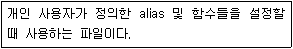
- ~/bashrc
- ~/bash_profile
- ~/.bashrc
- ~/.bash_profile
(정답률: 57%)
15. 다음 설명에 해당하는 파일로 알맞은 것은?
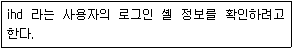
- /bin/bash
- /etc/shells
- /etc/passwd
- /etc/shadow
(정답률: 66%)
16. 다음은 사용자가 로그인 셸을 변경하는 과정이다. ( 괄호 ) 안에 들어갈 옵션으로 알맞은 것은?
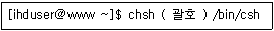
- -c
- -l
- -s
- -u
(정답률: 47%)
17. 다음은 로그인 셸 정보를 확인하는 과정이다. ( 괄호 ) 안에 들어갈 내용으로 알맞은 것은?
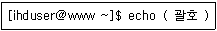
- SHELL
- $SHELL
- SHELLS
- $SHELLS
(정답률: 70%)
18. 다음 ( 괄호 ) 안에 들어갈 내용으로 알맞은 것은?
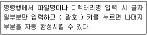
- [↑]
- [↓]
- [Tab]
- [Ctrl]
(정답률: 84%)
19. 다음 중 CentOS 7 리눅스의 최초 프로세스명으로 알맞은 것은?
- init
- inetd
- xinetd
- systemd
(정답률: 51%)
20. 다음 중 cron을 이용해서 해당 스크립트를 5분 주기로 실행하려고 할 때 ( 괄호 ) 안에 들어갈 내용으로 알맞은 것은?
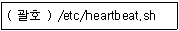
- 5 * * * *
- */5 * * * *
- 5/* * * * *
- * * * * 5
(정답률: 67%)
21. 다음 명령 실행 시에 발생되는 시그널로 알맞은 것은?
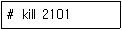
- SIGHUP
- SIGKILL
- SIGINIT
- SIGTERM
(정답률: 53%)
22. 다음 설명과 관련 있는 명령으로 알맞은 것은?
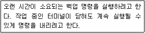
- nice
- renice
- nohup
- bg
(정답률: 65%)
23. 다음 중 프로세스 ID(PID)로 우선순위를 변경할 때 사용하는 명령으로 알맞은 것은?
- nice
- renice
- nohup
- pkill
(정답률: 66%)
24. 다음 중 포어그라운드 프로세스의 작업을 일시적으로 중지(suspend)시키는 키 조합으로 알맞은 것은?
- [ctrl]+[z]
- [ctrl]+[c]
- [ctrl]+[l]
- [ctrl]+[d]
(정답률: 70%)
25. 다음 설명으로 알맞은 것은?
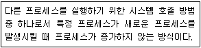
- exec
- fork
- nice
- renice
(정답률: 64%)
26. 다음 결과에 해당하는 명령으로 알맞은 것은?
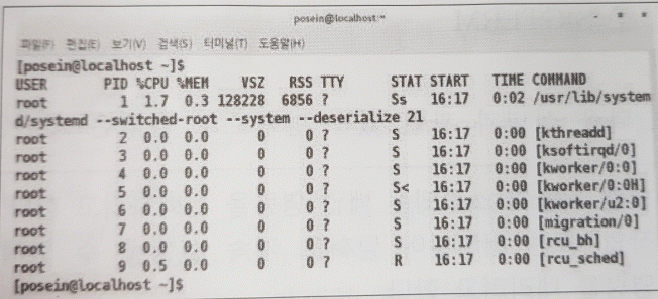
- ps
- top
- pstree
- pgrep
(정답률: 58%)
27. 다음 설명으로 가장 알맞은 것은?
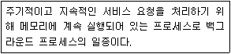
- init
- systemd
- daemon
- xinetd
(정답률: 79%)
28. 다음 중 백그라운드 프로세스와 가장 관련이 깊은 기호로 알맞은 것은?
- >
- &
- %
- ^
(정답률: 74%)
29. 다음 중 vi 편집기에서 줄의 linux로 끝날 경우 마지막에 '.' 기호를 덧붙이도록 치환하는 명령으로 알맞은 것은?
- :% s/linux$/linux./
- :% s/linux./linux$/
- :% s/linux＼>/linux./
- :% s/linux./linux＼>/
(정답률: 57%)
30. 다음 중 nano 편집기에서 커서의 위치를 해당줄의 끝으로 이동하는 조합으로 알맞은 것은?
- [Ctrl]+[a]
- [Ctrl]+[e]
- [Ctrl]+[c]
- [Ctrl]+[x]
(정답률: 69%)
31. 다음 중 vi 편집기의 명령모드에서 현재 커서가 위치한 곳의 문자를 삭제하는 입력 키로 알맞은 것은?
- e
- d
- x
- dd
(정답률: 54%)
32. 다음 설명과 같은 경우 유용한 vi 편집기의 환경설정값으로 알맞은 것은?
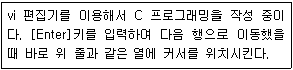
- set nu
- set ic
- set ai
- set sm
(정답률: 64%)
33. 리눅스를 서버로 사용할 예정이라 X 윈도를 설치하지 않은 상태이다. 다음 중 사용할 수 없는 편집기는?
- nano
- emacs
- gedit
- vim
(정답률: 67%)
34. 다음 설명에 해당하는 편집기로 알맞은 것은?
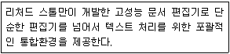
- nano
- emacs
- gedit
- pico
(정답률: 66%)
35. 아파치 웹 서버를 소스 설치하는 과정에서 지원되는 설치 옵션을 확인하려고 한다. 다음 ( 괄호 ) 안에 들어갈 내용으로 알맞은 것은?
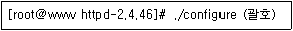
- --help
- --config
- --option
- --options
(정답률: 64%)
36. 다음 중 소스 파일로 프로그램을 설치하는 단계로 알맞은 것은?
- make → configure → make install
- make → make install → configure
- configure → make → make install
- configure → make install → make
(정답률: 71%)
37. PHP를 설치하기 위해 관련 웹 사이트에 접속했더니 동일한 버전으로 4개의 압축된 파일로 제공되고 있다. 빠른 다운로드를 위해 파일의 크기가 가장 작은 것을 선택하려고 할 때 알맞은 것은?
- php-7.4.15.tar.Z
- php-7.4.15.tar.xz
- php-7.4.15.tar.gz
- php-7.4.15.tar.bz2
(정답률: 64%)
38. 다음은 backup.tar 파일에 추가로 파일을 묶는 과정이다. ( 괄호 ) 안에 들어갈 내용으로 알맞은 것은?
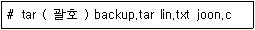
- cvf
- xvf
- rvf
- tvf
(정답률: 51%)
39. 다음 중 리눅스 시스템에 설치되어 있는 패키지 목록을 확인하는 명령으로 알맞은 것은?
- dpkg -i
- dpkg -I(대문자 i)
- dpkg -l(소문자 L)
- dpkg -L
(정답률: 67%)
40. 다음 중 데비안 계열 리눅스 패키지 관리 도구로 알맞은 것은?
- rpm
- yum
- dpkg
- zypper
(정답률: 68%)
41. 다음 중 sendmail이라는 패키지 설치 여부를 확인하는 명령으로 알맞은 것은?(문제 오류로 가답안 발표시 4번으로 발표되었으나 확정답안 발표시 3, 4번이 정답 처리 되었습니다. 여기서는 가답안인 4번을 누르면 정답 처리 됩니다.)
- rpm -i sendmail
- rpm -a sendmail
- rpm -V sendmail
- rpm -q sendmail
(정답률: 65%)
42. 다음 중 yum 기반으로 telnet이라는 문자열이 포함된 패키지를 찾는 명령으로 알맞은 것은?
- yum search telnet
- yum search *telnet*
- yum search ^telnet^
- yum search ?telnet?
(정답률: 57%)
43. 다음 설명에 해당하는 RAID 기술로 알맞은 것은?
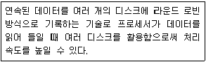
- Volume Group
- Linear
- Striping
- Mirroring
(정답률: 59%)
44. 다음 중 프린팅 시스템에서 사용하는 명령으로 틀린 것은?
- lp
- cancel
- lpadmin
- alsactl
(정답률: 68%)
45. 다음 설명에 해당하는 기술로 알맞은 것은?
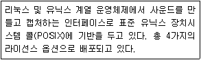
- OSS
- ALSA
- SANE
- CUPS
(정답률: 51%)
46. 다음 설명과 같은 상황에서 사용해야 하는 기술로 가장 알맞은 것은?
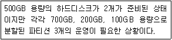
- LVM
- RAID
- Bonding
- Clustering
(정답률: 62%)
47. 다음 중 프린팅 시스템과 가장 거리가 먼 것은?
- CUPS
- LPRng
- LPD
- SANE
(정답률: 66%)
48. 다음 중 프린터 작업을 요청하는 명령으로 알맞은 것은?
- lpr
- lpq
- lpc
- lpstat
(정답률: 59%)
2과목: 리눅스 활용
49. 다음 중 시스템 시작 시 X 윈도 모드로 부팅이 되도록 설정하는 명령은?
- systemctl runlevel.5
- systemctl graphical.target
- systemctl set-default runlevel.5
- systemctl set-default graphical.target
(정답률: 45%)
50. 다음 설명과 가장 관련이 깊은 것은?
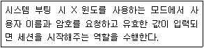
- XCB
- GDM
- GNOME
- Mutter
(정답률: 36%)
51. 다음 중 윈도 매니저의 종류로 틀린 것은?
- Xfce
- Mutter
- Kwin
- Windowmaker
(정답률: 42%)
52. 다음 중 스프레드시트(Spreadsheet) 프로그램으로 알맞은 것은?
- LibreOffice Writer
- LibreOffice Draw
- LibreOffice Calc
- LibreOffice Impress
(정답률: 66%)
53. 다음 중 X 서버에서 X 클라이언트의 접근을 허가할 때 IP 주소를 사용하는 명령어로 알맞은 것은?
- xauth
- xhost
- xset
- xmodmap
(정답률: 72%)
54. 다음 설명에 해당하는 용어로 알맞은 것은?
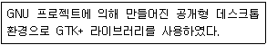
- KDE
- GNOME
- LXDE
- Wayland
(정답률: 66%)
55. 다음 중 X 클라이언트에서 원격지로 응용 프로그램을 전송하기 위해 변경해야 하는 환경변수로 알맞은 것은?
- TERM
- HOME
- HOSTNAME
- DISPLAY
(정답률: 59%)
56. 다음 그림에 해당하는 이미지 뷰어 프로그램으로 알맞은 것은?
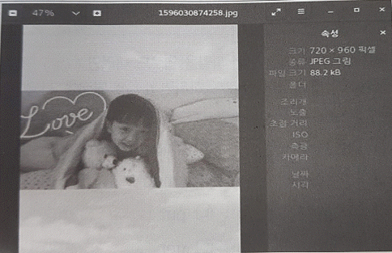
- Eog
- ImageMagicK
- Gimp
- Totem
(정답률: 58%)
57. 다음 조건일 때 사용되는 브로드캐스트 주소로 알맞은 것은?
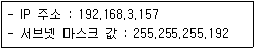
- 192.168.3.255
- 192.168.3.63
- 192.168.3.127
- 192.168.3.191
(정답률: 62%)
58. ssh 명령어를 이용해 IP주소가 192.168.12.22인 ssh 서버에 접속하려는데, 포트 번호가 8080번으로 변경되었다. 다음 중 해당 서버에 접속하는 방법으로 알맞은 것은?
- ssh 192.168.12.22 8080
- ssh 192.168.12.22:8080
- ssh 192.168.12.22 -P 8080
- ssh 192.168.12.22 -p 8080
(정답률: 53%)
59. 다음 ( 괄호 ) 안에 들어갈 내용으로 알맞은 것은?
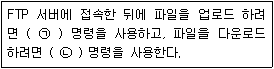
- ㉠ open ㉡ close
- ㉠ mkdir ㉡ rmdir
- ㉠ get ㉡ put
- ㉠ put ㉡ get
(정답률: 75%)
60. 다음 중 IPv6에 대한 설명으로 틀린 것은?
- 패킷 크기의 확장
- IP 주소 대역 구분인 클래스의 확장
- 패킷 출처 인증 및 비밀 보장 기능 지원
- 흐름 제어 기능 지원
(정답률: 60%)
61. 다음 설명에 해당하는 기술로 알맞은 것은?
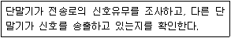
- CDMA
- PSTN
- PDSN
- CSMA/CD
(정답률: 72%)
62. 다음 설명에 해당하는 프로토콜로 알맞은 것은?
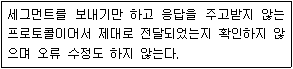
- IP
- VRRP
- TCP
- UDP
(정답률: 73%)
63. 다음 중 네임 서버가 기록되어 있는 파일로 알맞은 것은? ·
- /etc/hosts
- /etc/resolv.conf
- /etc/sysconfig/network
- /etc/services
(정답률: 57%)
64. 다음의 LAN 구성 방식에 대한 설명으로 알맞은 것은?
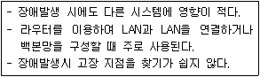
- 스타형
- 망형
- 버스형
- 링형
(정답률: 67%)
65. 다음 중 IP 주소 할당 및 도메인을 관리하는 국제기구로 알맞은 것은?
- IEEE
- ISO
- EIA
- ICANN
(정답률: 58%)
66. 다음 중 네트워크 인터페이스 카드의 물리적 연결 여부를 확인할 때 사용하는 명령어로 알맞은 것은?
- ethtool
- arp
- netstat
- route
(정답률: 64%)
67. 다음 중 OSI모델 기준으로 가장 많은 계층을 지원하는 장치로 알맞은 것은?
- Router
- Bridge
- HUB
- RJ-45케이블
(정답률: 68%)
68. 다음 중 telnet 명령어를 사용해 IP 주소가 192.168.12.22번인 HTTPS 서버의 포트를 점검하는 방법으로 알맞은 것은?
- telnet 192.168.12.22 80
- telnet 192.168.12.22:80
- telnet 192.168.12.22 -p 443
- telnet 192.168.12.22 443
(정답률: 49%)
69. 다음 중 이더넷 기반의 LAN 구성을 할 경우에 가장 거리가 먼 장치는?
- 리피터
- 허브
- RJ-45
- SAN 스위치
(정답률: 58%)
70. 다음 중 OSI 참조 모델을 제정한 기관으로 알맞은 것은?
- IEEE
- EIA
- ANSI
- ISO
(정답률: 68%)
71. 다음 중 프로토콜과 포트 번호의 조합으로 알맞는 것은?
- TELNET - 22
- DNS - 53
- SSH- 23
- FTP - 80
(정답률: 64%)
72. 다음 중 메일 서버간의 메시지를 교환할 때 사용하는 프로토콜로 알맞은 것은?
- SMTP
- FTP
- POP3
- IMAP
(정답률: 73%)
73. 다음 중 로컬 네트워크에 있는 특정 호스트의 MAC 주소를 조회하려고 할 때 사용하는 명령어로 알맞은 것은?
- arp
- telnet
- route
- ethtool
(정답률: 67%)
74. 다음 설명으로 알맞은 것은?
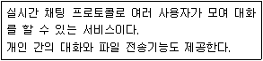
- IRC
- NFS
- SAMBA
- Usenet
(정답률: 51%)
75. 다음 중 루프백(Loopback) IP 주소로 알맞은 것은?
- 10.0.0.1
- 192.168.0.1
- 172.16.0.254
- 127.0.0.1
(정답률: 72%)
76. 다음 중 최상위 도메인으로 틀린 것은?
- com
- net
- kr
- go
(정답률: 70%)
77. 다음 설명에 해당하는 프로그램으로 알맞은 것은?
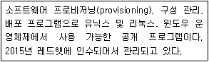
- Docker
- Ansible
- OpenStack
- Kubernetes
(정답률: 39%)
78. 다음 설명에 운영체제로 알맞은 것은?
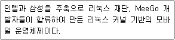
- webOS
- Tizen
- Bada OS
- Android
(정답률: 61%)
79. 다음 중 CPU 반가상화를 지원하는 서버 가상화 기술로 알맞은 것은?
- KVM
- XEN
- VirtualBox
- Hyper-V
(정답률: 46%)
80. 다음 설명으로 알맞은 것은?
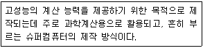
- 고가용성 클러스터
- 부하분산 클러스터
- HA(High Available) 클라스터
- HPC(High Performance Computing) 클러스터
(정답률: 63%)
CentOS 7에서 사용자의 디스크 사용량을 제한할 때 사용하는 명령은 "xfs_quota"입니다. 이 명령은 XFS 파일 시스템에서 사용자 또는 그룹의 디스크 사용량을 제한하는 데 사용됩니다. "quota"는 디스크 사용량 제한을 설정하는 데 사용되지만, XFS 파일 시스템에서는 사용되지 않습니다. "xquota"와 "set_quota"는 CentOS 7에서 사용되지 않는 명령입니다.